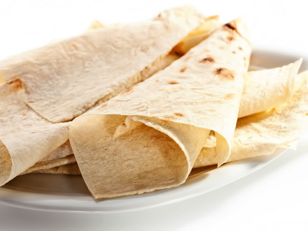
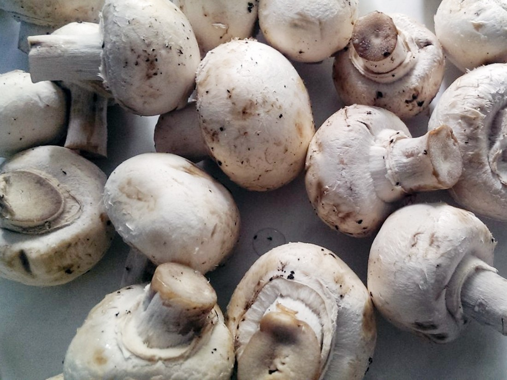
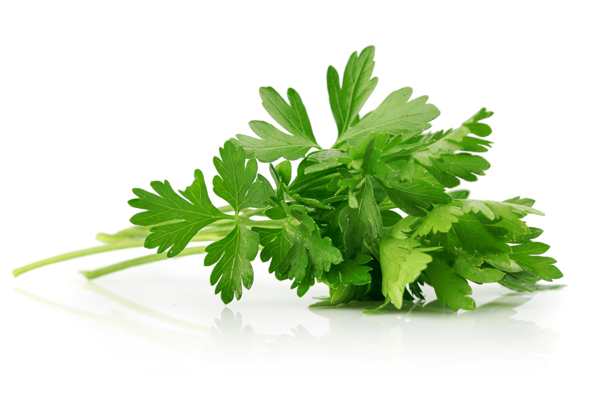
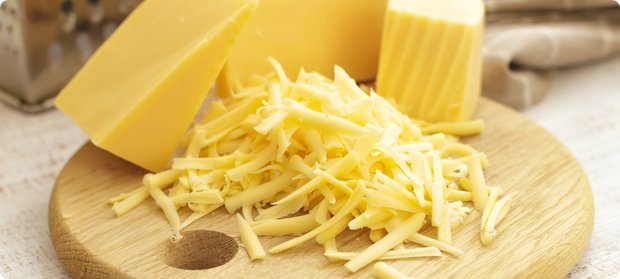

| Описание | Лаваш с такой начинкой не нашла - выкладываю свой вариант - вкусненько, быстро, просто и красиво! |
| Каллории | 300 кКал |
Информация о блюде

6 шт




1 зубчик

1 зубчик
Способ приготовления
- Берем первый блин и смазываем майонезом.
- Моем, нарезаем петрушку.
- Выкладываем на майонез и накрываем все это вторым блином.
- Грибы моем, нарезаем и обжариваем на сливочном масле.
- Второй блин тоже смазываем майонезом, сверху кладем грибочки.
- Накрываем третьим блином, майонез и сверху трем сыр.
- Все эти прелести скручиваем в рулет, кладем или заматываем в полиэтилен и забываем в холодильнике. (На 1 часик, можно и больше).
- Когда достали, нарезаем, украшаем и вкушаем)))